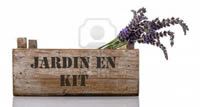
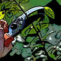
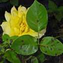

Les services de Par Nature pour les particuliers
De la petite terrasse au parc privé, chaque espace de nature a besoin d'être soigné comme il se doit. C'est dans cet esprit que Par Nature a développé toute une gamme de services pour vous permettre de profiter pleinement de votre jardin. La proximité et la disponibilité sont nos atouts.
- Jardin en Kit: Nous avons défini des kits de base pour vous permettre d'aménager vous même votre jardin. Les kits sont modifiables et personnalisable à l'infini, pour que votre jardin vous ressemble enfin.
.jpg) Le Bureau d'étude est là pour vous offrir une étude complète de votre projet. Nous mettrons à votre disposition toute notre expérience pour vous permettre de réaliser le jardin de vos rêves.
Le Bureau d'étude est là pour vous offrir une étude complète de votre projet. Nous mettrons à votre disposition toute notre expérience pour vous permettre de réaliser le jardin de vos rêves.
- Restez zen: Confiez nous l'intégralité de la réalisation de votre projet. De l'étude à la réalisation des travaux, nous nous occupons de tout. Vous pourrez ainsi profiter d'un jardin réalisé dans les règles de l'art et qui vous ressemble.
- Vous avez envie d'apprendre les bons gestes pour réaliser votre aménagement ou pour entretenir votre jardin ? Vous n'etes pas sûr de mettre en place de la meilleure manière le kit que vous nous avez acheté ? Vous souhaitez améliorer vos connaissance en paysage ? C'est dans cet esprit que nous avons mis en place le Coaching Nature. Nous nous déplaçons chez vous à votre guise pour vous apporter toutes les connaissances d'un paysagiste professionnel à domicile.
- Allo Docteur ? Ma plante est malade ! C'est parce que chaque plante est un être vivant qu'il est important de bien soigner que nous vous proposons ce service SOS plante malade. Après diagnostic du problème, nous vous proposerons la meilleur solutions à votre problème.
- Simplement besoin d'un jardinier pour l'entretien de vos espaces verts ? Vous etes au bon endroit. Nous vous assurons un travail soigné dans le respect des plantes et de vos aménagements. Demandez un devis gratuit.